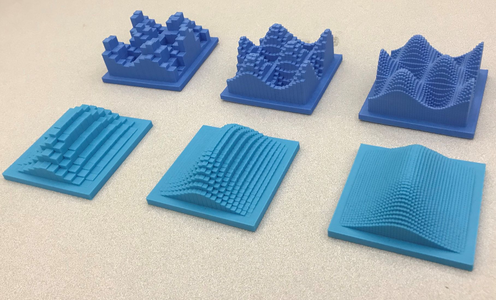
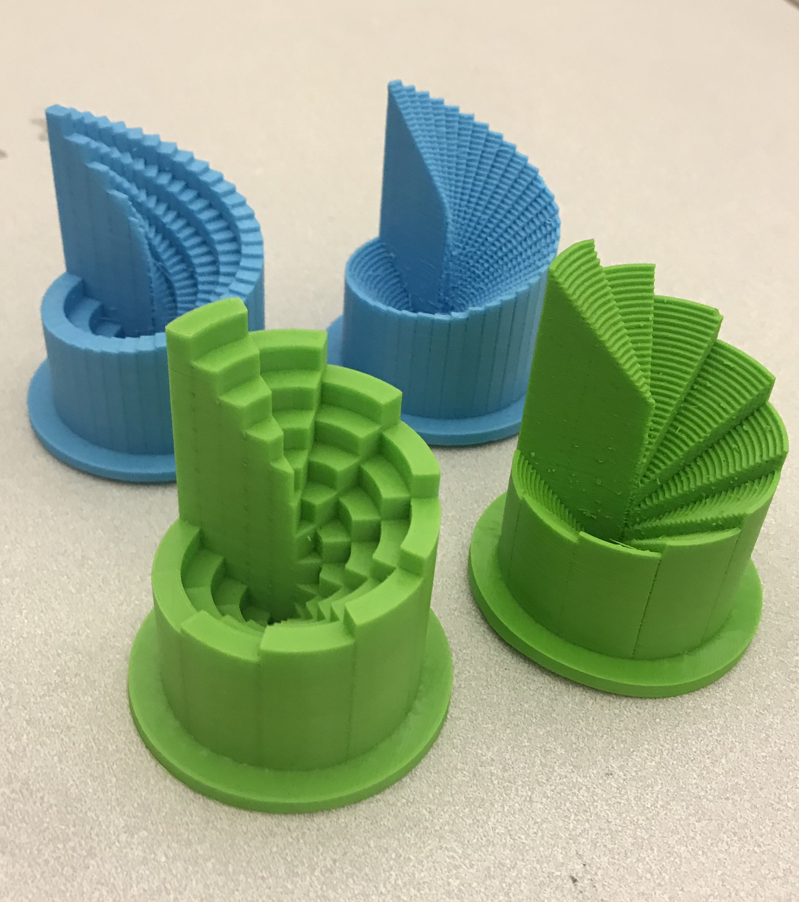

3D Printed Riemann Sums
Riemann sums are an important part of the study of multivariable calculus, and 3d printing gives a wonderful visualization of the convergence of Riemann sums to a given function. Using a wonderful OPENSCAD program of osj1961, one can design and 3d print cartesian Riemann sums. Just modify the code to the desired function of 2 variables. You can even select how coarse or fine you want the print to be (making it useful to observe convergence).
I adapted the ideas of osj1961's code to be able to do the same for functions of 2 variables in polar coordinates. Here you can modify Δr and Δθ (and again observe convergence). I have found these models to be very instructive in the classroom, as a tangible way to understand the extra factor of r in a polar integral.
Below are a couple of models of some of my favorite functions. In cartesian coordinates there is f(x,y)=sin(x)cos(y), and f(x,y) = (1+x2+y4)-1. In polar coordinates we have f(r,θ) = r+θ2
 